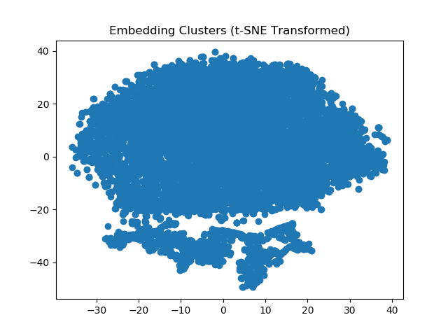

Patterns in Git
Two years ago, I proposed that someone could try to fix Git’s usability issues by:
-
Downloading data from several thousand large projects on GitHub.
-
Using statistical techniques to identify patterns in those repositories’ branch-and-merge graphs.
-
Selecting a small set of common subgraphs that account for a large fraction of everyday use.
-
Building an 80/20 tool that provides those, and only those.
Juno Chen, Ian Flores, Rayce Rossum, Richie Zitomer have now done this as their major project in UBC’s excellent Master of Data Science program, and you can find their work here. The short version is that there are no patterns—at least, none that show up in repository history. The first clustering was promising:

However, the closer the team looked, the less signal they found. Most GitHub repositories are initialized, have a handful of commits from one person, and are then abandoned; once you filter those out, most of the remainder are a single linear chain of commits (essentially, one person using Git for file backup). Take that away and you’re left with this:

There are many possible explanations for these results:
git merge might attenuate or erase the signal we’re looking for,
the fraction of “interesting” repositories on Git might be vanishingly small,
or people might only think they’re following particular workflows.
The only way to find out will be to observe developers and/or capture and analyze client-side data.
This wasn’t the result I was hoping for, but it’s clear now that my hopes were naïve. On the upside, it was a genuine pleasure to work with Richie, Rayce, Ian, and Juno, and I would recommend them and the UBC MDS program wholeheartedly.